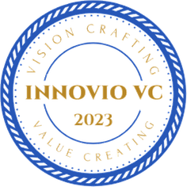
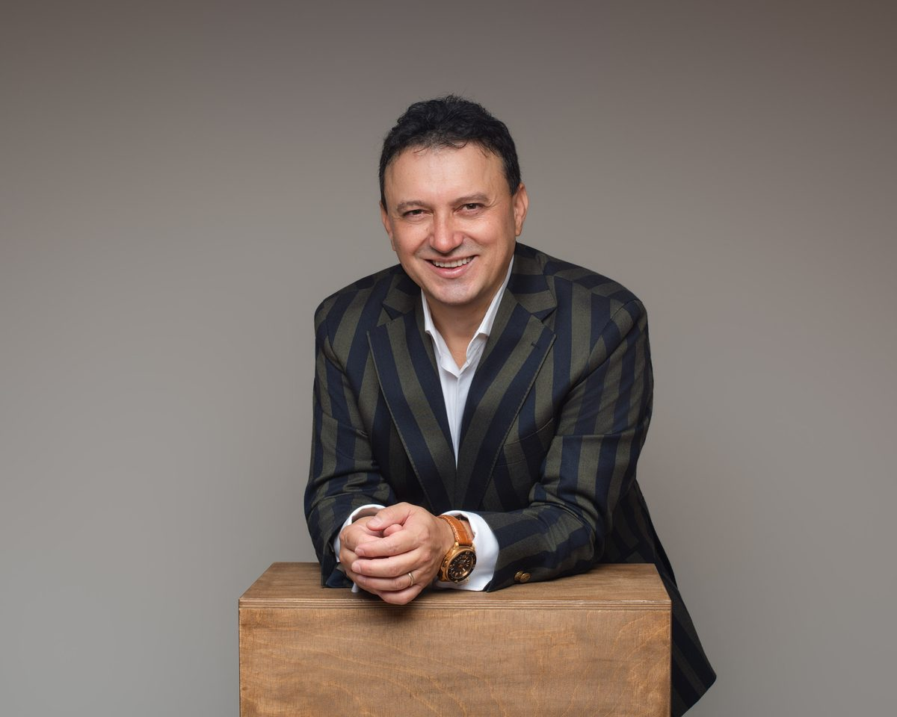

欧盟资金与复苏计划（PNRR）
识别合适的资金申请，审核资格，撰写申请书、商业计划和相关研究。
- PNRR、POCIDIF、区域方案
- 地平线欧洲、数字欧洲
- 付款与报销申请
Ciprian Constantin Ghioc · Founder & CEO, INNOVIO VC
我们帮助企业把投资构想变成获得资助的项目：从寻找合适的资金申请、撰写申请书，到采购、实施和报销，由曾经领导欧盟资金管理机构的专家亲自负责。



我曾担任罗马尼亚竞争力业务方案（2014–2020）管理局局长和环境业务方案管理局局长。我了解资金申请指南如何制定、项目如何评审，以及项目实施中最常见的问题在哪里。
2023 年我创立了 INNOVIO VC，为企业、公共机构、医院和教育机构提供战略咨询，帮助其获得欧盟资金、罗马尼亚复苏与韧性计划（PNRR）及国家资金。我们特别欢迎计划在罗马尼亚投资的中国企业：我们帮助您了解适用的欧盟和罗马尼亚资助方案与国家援助，并在当地负责申请和合规。
„Vision Crafting, Value Creating”
一支团队，陪伴您从最初构想到最后一笔付款申请。
识别合适的资金申请，审核资格，撰写申请书、商业计划和相关研究。
依据罗马尼亚第 98/2016 号法律编制招标文件和技术规格，组织私营受益方采购并评审投标。
依据《一般集体豁免条例》（第 651/2014 号）或微量援助进行分类，确定援助强度、合格费用及项目结束后的义务。
为企业和公共机构提供数字化、云计算、网络安全和人工智能项目。
为光伏电站、能效提升、储能和绿色转型项目争取资金。
为医院、诊所和医疗服务机构提供设备、数字系统和基础设施项目咨询。
为中小学和大学提供智能实验室、设备和数字化项目。
增长战略、交易结构、投资者关系以及混合融资（赠款加股权）。
除政府补助外，我们还帮助您从投资基金获得资本，并向投资者提供可信的财务报告。
融资准备、匹配合适的 VC/PE 基金并协助至交易签署，可结合欧盟补助进行混合融资。
风险投资与私募股权服务为并购、VC/PE 投资、贷款及欧盟资助项目提供独立报告：盈利质量、净债务、营运资本与风险。
财务尽职调查服务分析贵机构、计划投资以及正在开放或即将开放的资金申请。
编制预算、指标、商业计划或可行性研究，并提交申请。
组织采购程序，管理进度、合同和风险。
付款申请、进度报告及项目完成后的可持续性。
我们的资金页面每天自动汇总罗马尼亚官方门户 oportunitati-ue.gov.ro 上的所有开放申请。每个项目都有“立即申请”按钮，可获取咨询报价（页面为罗马尼亚语）。
我们覆盖资助项目的全周期：寻找合适的资金申请、资格审核、资金策略、申请书与商业计划、提交、评审澄清、采购、实施、报告以及付款申请。
是的。我们帮助中国投资者了解其投资适用的罗马尼亚和欧盟资助方案及国家援助计划，并在当地负责申请和合规流程。我们可以用英语沟通。
2021–2027 期间包括复苏与韧性计划（PNRR）、POCIDIF、八个区域方案、卫生方案、教育与就业方案、公正转型方案，以及由欧盟委员会直接管理的地平线欧洲、数字欧洲等。我们的开放项目页面每天根据官方来源自动更新。
可以。我们依据第 98/2016 号法律编制招标文件和技术规格，组织私营受益方采购并评审投标，确保费用在审计时保持合格。
通过 WhatsApp 或电子邮件告诉我们您的行业、地区、投资类型和预计金额，我们会回复适用的资助方案和后续步骤。
大多数企业补助以国家援助形式发放，依据《一般集体豁免条例》（欧盟第 651/2014 号）或微量援助规则。分类决定援助强度、合格费用以及项目结束后的义务。
我们会通过 WhatsApp、电话或电子邮件快速回复。工作语言：罗马尼亚语和英语。